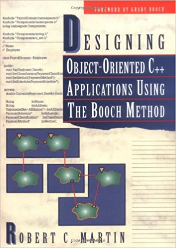
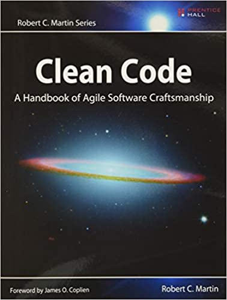

Martin has authored many contributions to the field such as:
| 1995 |  | Designing Object-Oriented C++ Applications Using the Booch Method. Prentice Hall. |
| 2002 | |
Agile Software Development, Principles, Patterns, and Practices. Pearson. |
| 2009 |  | Clean Code: A Handbook of Agile Software Craftsmanship. Prentice Hall. |
| 2011 | The Clean Coder: A Code Of Conduct For Professional Programmers. Prentice Hall. | |
| 2017 | Clean Architecture: A Craftsman's Guide to Software Structure and Design. Prentice Hall. | |
| 2019 | Clean Agile: Back to Basics. Prentice Hall. |
He is currently co-authoring a new book, "Advanced Principles, Patterns, and Processes of Object Oriented Software Development".